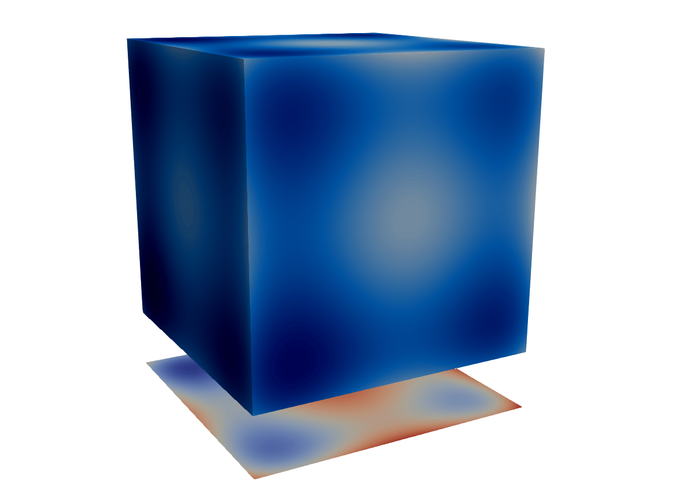
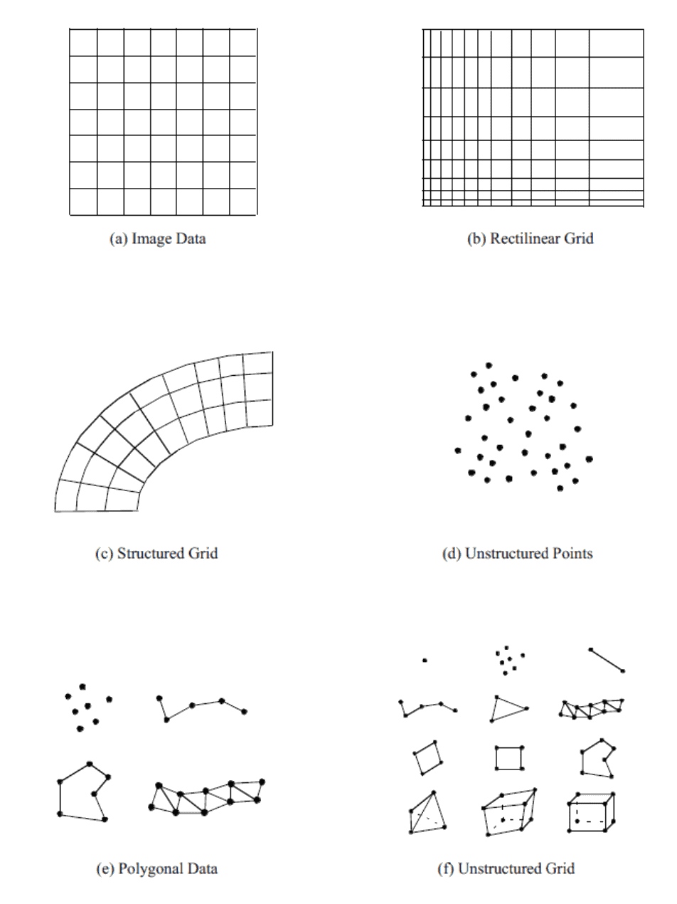
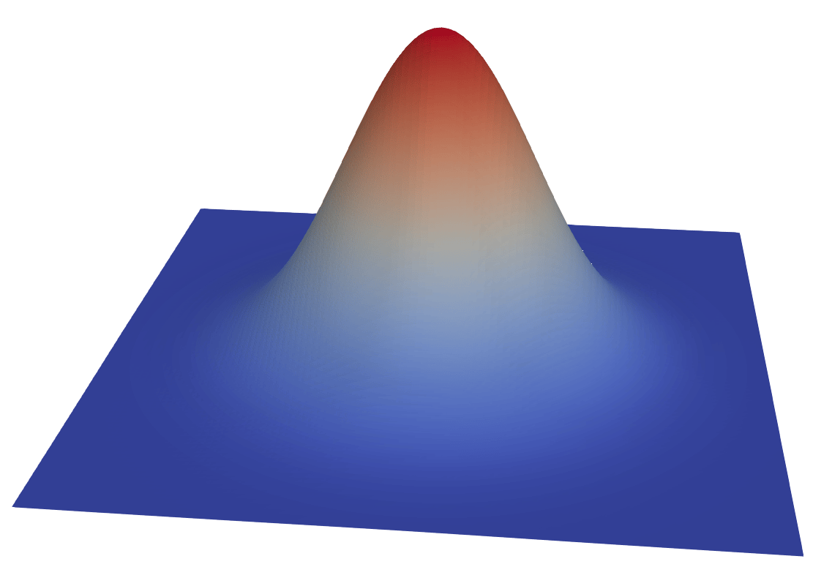
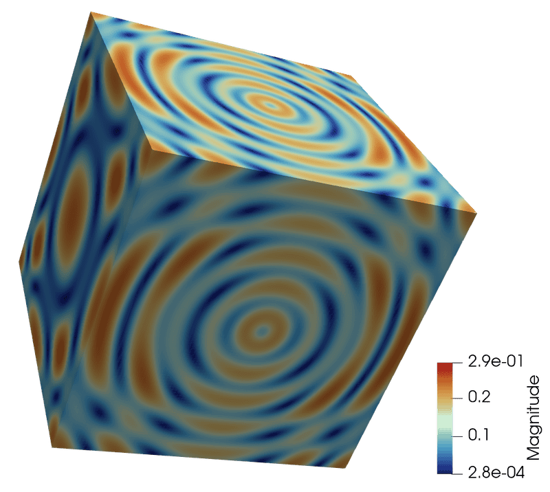
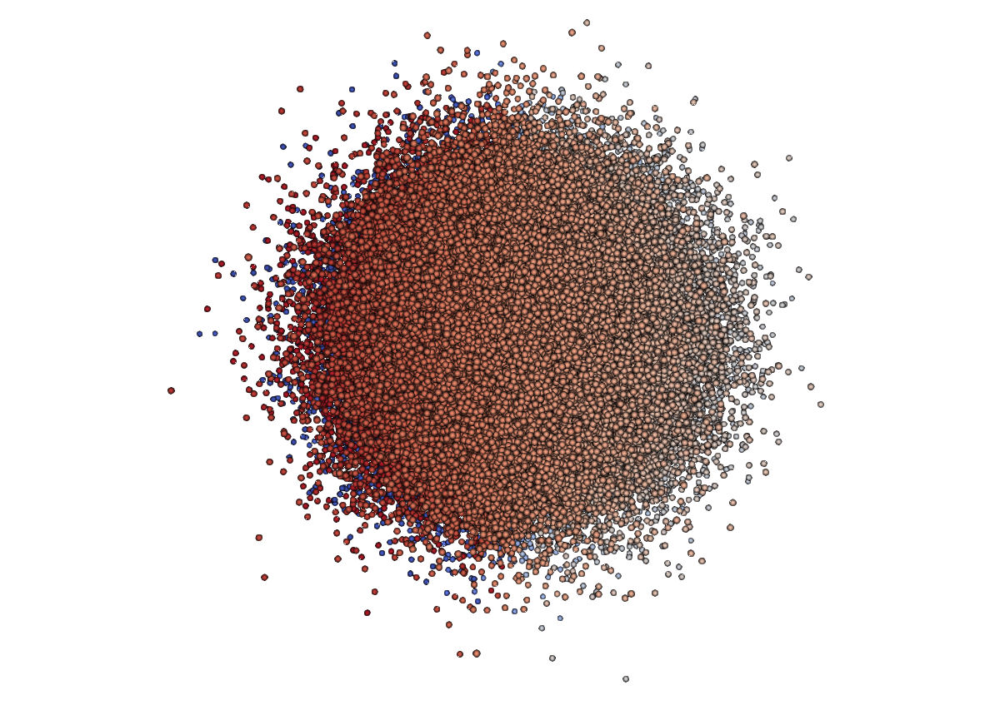
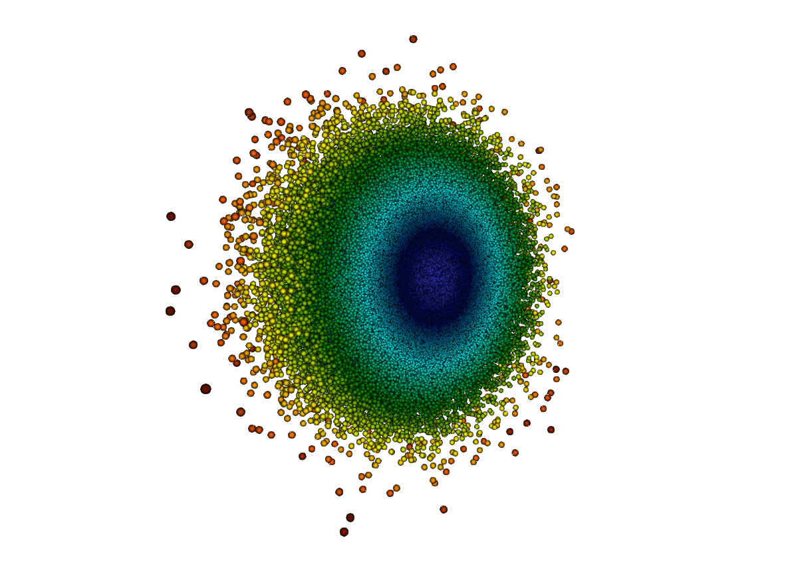
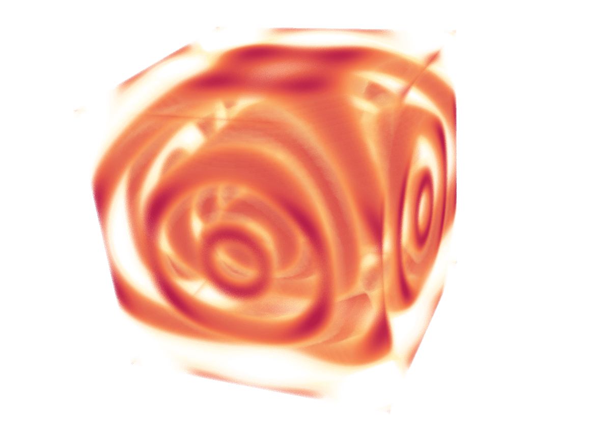
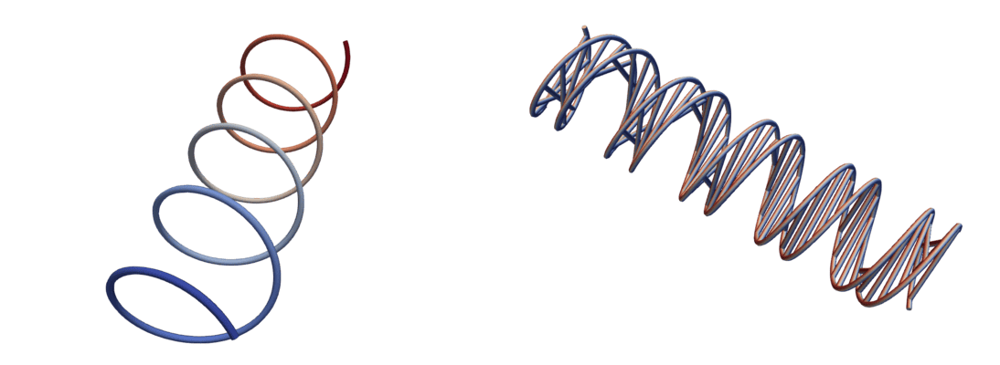
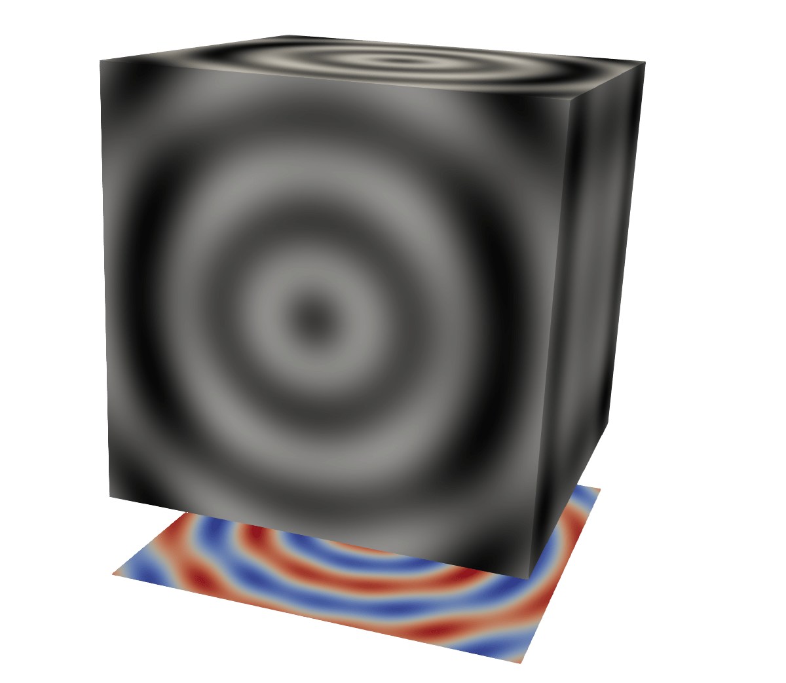
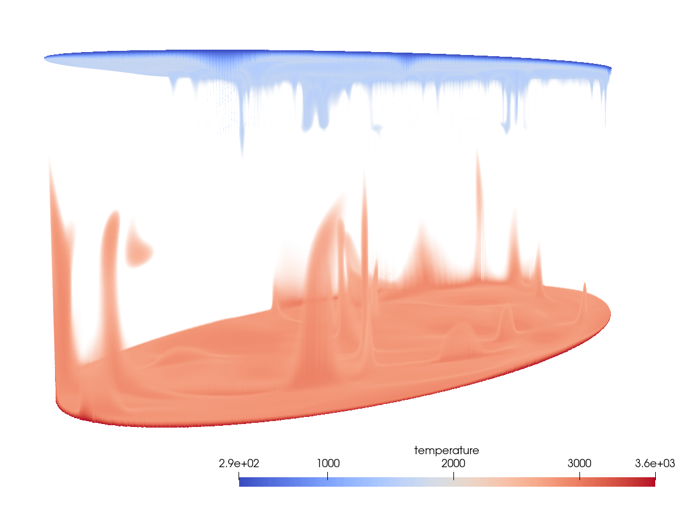

Programmable Filter / Source in ParaView
March 17th, 10am-noon Pacific Time
Instructor: Alex Razoumov (SFU)
Software: To participate in the course exercises, you will need to install ParaView on your computer and download this ZIP file (~29MB). Unpack it and find the following data files: cube.txt, tabulatedGrid.csv, compact150.nc, and sineEnvelope.nc.
Intro
Python scripting in ParaView
Inside ParaView you can use Python scripting in several places:
- Any ParaView workflow can be saved as a Python script (Tools | Start/Stop Trace)
- run via
pvpython, orpvbatch(especially useful for batch visualization) - run via View | Python Shell
- run via
paraview --script=...(automatically starts ParaView GUI)
- run via
- Any ParaView state can be saved as a Python script (File | Save State, select Python format)
- run via File | Load State
- Filters | Python Calculator – intermediate between regular Calculator and Programmable Filter, can create new variables but not new grids
- Filters | Programmable Filter / Source – today’s workshop
Why would you want to use the Programmable Filter or Programmable Source?
- Short answer: when standard filters (Clip, Slice, Contour, etc) are not enough.
- Longer answer: Fundamentally, Programmable Filter and Source let you create custom VTK objects directly within ParaView. For example, suppose we want to plot a projection of a cubic dataset along one of its principal axes, or perform some other transformation for which no built-in filter exists. We can compute this projection ourselves and store it in ParaView as a new mesh, offset from the original volume.

Calculator / Python Calculator filter cannot modify the geometry or create new meshes …
Common VTK data types

In today’s workshop, we will create datasets in the following formats:
- vtkImageData,
- vtkPolyData, and
- vtkStructuredGrid.
For simplicity, we will skip examples with OutputDataSetType = vtkUnstructuredGrid. While this output type would produce the most versatile object, unstructured cells require you to explicitly define the connectivity between their points resulting in additional code. You can find a couple of examples of creating vtkUnstructuredGrid in our 2021 webinar.
Programmable Filter workflow
- Apply Programmable Filter to a ParaView pipeline object
- Select OutputDataSetType: either Same as Input, or one of the VTK data types from above
- In the Script box, write Python code: input from a pipeline object → output
- use
inputs[0].Points[:,0:3]and/orinputs[0].PointData['array name']and/orinputs[0].CellData['array name']to compute your output: points, cells, and data arrays - some objects take/pass multiple
inputs[:]
- Depending on output’s type, might need to describe it in the Script (RequestInformation) box
- Hit Apply
Programmable Source workflow
Same as Programmable Filter but without an input. You can:
- build an object programmatically from scratch, or
- read and process data from a file
Programmable Filter examples
Example 1: warp into 3D
In this simple example, we will warp a 2D grid into the third dimension by the value of a 2D function and compute a new point data array from coordinate values.
Let’s start with a 2D Gaussian:
\[f(\vec r)=e^{-\frac{|\vec r-\vec r_0|^2}{2\sigma^2}},\quad\vec r\in\mathbb{R}^2\]
centered at (0,0).
- Apply Sources | Plane at \(100^2\) resolution
What VTK data type is this plane?
- Apply Programmable Filter
- set OutputDataSetType = Same as Input
- this will create the same discretization as its input, without the fields (PointData)
- Let’s print some info, one line at a time:
View | Output Messages
print(type(output)) # paraview.vtk.numpy_interface.dataset_adapter.PolyData
# print(dir(output))
# print(output.Points.shape) # 3D coordinates x,y,z
# print(output.Points) # but all z-coordinates are 0s- Paste into Script
With OutputDataSetType = Same as Input, ParaView will copy inputs geometry into output geometry and set the same coordinates:
output.Points[:,0] = inputs[0].Points[:,0]
output.Points[:,1] = inputs[0].Points[:,1]
output.Points[:,2] = inputs[0].Points[:,2]We will overwrite the z-coordinate, warping the geometry into the 3rd dimension:
x = inputs[0].Points[:,0]
y = inputs[0].Points[:,1]
output.Points[:,2] = 0.5*exp(-(x**2+y**2)/(2*0.02))
dataArray = 0.3 + 2*output.Points[:,2]
output.PointData.append(dataArray, "pnew") # add the new data array to our outputWhat are the dimensions of dataArray?
- Display in 3D, colour with
pnew

A scalar field is stored as a flat, 1D array over 3D points
print(output.PointData["pnew"].shape)- Multiple ways to access data, e.g. these two lines point to the same array
print(output.PointData["pnew"])
print(output.GetPointData().GetArray("pnew"))- The same for points
print(output.GetNumberOfPoints())
print(output.GetPoint(1005)) # x,y,z coordinates of a specific point
print(output.Points[1005,:]) # sameExample 2: NumPy vectorization
In this example, we will compute a new data array on the existing geometry using NumPy-based vectorization. This you could also do using other methods, but the point of this example is to show how you can do NumPy vectorization inside the Programmable Filter.
- load
sineEnvelope.nc - apply Filters | Gradient, save as “v”
- Apply Filters | Programmable Filter, set OutputDataSetType = Same as Input, paste into Script:
import numpy as np
input_data = inputs[0].PointData['v']
# print(input_data.shape) # for practical purposes, this is a NumPy array
mag = np.linalg.norm(input_data, axis=1)
output.PointData.append(mag, 'Magnitude' )- Render as Surface, colour by Magnitude

Programmable Source examples
Now we’ll switch to the Programmable Source. It has no input, so we will need to set its OutputDataSetType to one of the VTK data types.
Example 1: point cloud
Here we use Programmable Source to create a vtkPolyData object, add a bunch of points, and create a single cell to make these points visible in Surface view.
Reset your ParaView session and then:
- Apply Programmable Source, set OutputDataSetType = vtkPolyData
- Paste this code into Script:
from numpy import abs, random, sin, cos, pi, arcsin
numPoints = 1_000_000
r = abs(random.randn(numPoints)) # 1D array drawn from a normal (Gaussian) distribution
theta = arcsin(2.*random.rand(numPoints)-1.) # 1D array drawn from a uniform [0,1) distribution
phi = 2.*pi*random.rand(numPoints) # 1D array drawn from a uniform [0,1) distribution
x = r*cos(theta)*sin(phi)
y = r*cos(theta)*cos(phi)
z = r*sin(theta)
coordinates = vtk.numpy_interface.algorithms.make_vector(x, y, z) # numpy array (numPoints,3)
output.Points = coordinates # set point coordinates
output.PointData.append(r, "r") # append a scalar field on points
output.PointData.append(phi, "phi") # append another scalar field on points- Points are not visible in ParaView ⇨ either (a) switch to Point Gaussian representation, or (b) in Script’s output create a single cell without connections:
vtk.VTK_POLY_VERTEX is a special implementation of vtkCell that does not have connections but lets you group a set of points in a single cell that will be visible in the Surface representation, even though there are no polygons or surfaces.
pointIds = vtk.vtkIdList()
pointIds.SetNumberOfIds(numPoints) # allocate memory for describing 1e6 points in a cell
for i in range(numPoints): # create an ordered set of 1e6 points
pointIds.SetId(i, i) # i-th point will be listed at i-th place
output.Allocate(1) # allocate space for a single cell
output.InsertNextCell(vtk.VTK_POLY_VERTEX, pointIds) # insert this cell into the output
- Colour by radius
- Apply Clip (need the cell for that)
- Optionally switch back to Point Gaussian representation

Example 2: custom reader
A common use of Programmable Source is to prototype readers. Let’s quickly create our own reader for a CSV file with 3D data on a grid.
We will start with a conventional approach to reading CSV files:
- File | Open, navigate to
tabulatedGrid.csv, select CSV Reader - Pass tabular data through Table To Structured Grid
- set data extent in each dimension
- specify
x/y/zcolumns - colour with
scalar
Now let’s replace this with reading the CSV file directly to the Cartesian mesh, without using the File | Open dialogue. Reset your ParaView and then:
- Apply Programmable Source, set OutputDataSetType = vtkImageData
- Into Script paste this code:
import numpy as np
data = np.genfromtxt("/Users/razoumov/programmableFilter/tabulatedGrid.csv",
dtype=None, names=True, delimiter=',', autostrip=True)
nx = len(set(data['x']))
ny = len(set(data['y']))
nz = len(set(data['z']))
output.SetDimensions(nx,ny,nz)
output.SetExtent(0,nx-1,0,ny-1,0,nz-1)
output.SetOrigin(0,0,0)
output.SetSpacing(.1,.1,.1)
output.AllocateScalars(vtk.VTK_FLOAT,1)
vtk_data_array = vtk.util.numpy_support.numpy_to_vtk(num_array=data['scalar'], array_type=vtk.VTK_FLOAT)
vtk_data_array.SetNumberOfComponents(1)
vtk_data_array.SetName("density")
output.GetPointData().SetScalars(vtk_data_array)- The Image (Uniform Rectilinear Grid) array is properly created (check the Information tab!), but nothing shows up …
There is one additional step: we need to tell ParaView about the dimensionality and data extent of our vtkImageData, so that ParaView could set the view. A proper file reader plugin (written in C++ with VTK library calls) would set this in the background.
With the Programmable Filter, ParaView adopts a 2-pass pipeline, where for some data types / scenarios it needs to know more about the data before it runs the code in Script. This metadata is provided inside the Script (RequestInformation) box.
The reason this is needed in this example is that in a distributed environment a parallel pvserver must know the data extents in advance (before running the Script) in order to decide how to decompose the data across MPI ranks before reading it. When the data is read, the Script fills the corresponding memory blocks on each MPI rank.
In some cases this additional information in the RequestInformation box is not required (and you can safely leave the box empty), for example:
- OutputDataSetType = Same as Input ⇨ the output data will be decomposed in exactly the same way as the input data.
- OutputDataSetType = vtkPolyData ⇨ Polygonal Data is not automatically decomposed at read time (recall our workshop on Remote visualization).
- Into Script (RequestInformation) box paste this code:
from paraview import util
nx, ny, nz = 10, 10, 10
util.SetOutputWholeExtent(self, [0,nx-1,0,ny-1,0,nz-1])The file cube.txt has 125,000 integers (stored in 50 lines of text, each line containing 2500 integers) that were computed and printed with this Julia code:
for i in 1:50
for j in 1:50
for k in 1:50
print(data[i,j,k], " ")
end
end
println()
endYou need to modify the previous Programmable Source to read this data.
Example 3: 3D function
Similar to using a Source to read data from a file, you can use a Source to create a discretized version of a 3D function in memory, without storing any data on disk.
- Apply Programmable Source, set OutputDataSetType = vtkImageData
- Into Script paste this code:
from numpy import linspace, sin, sqrt
n = 100 # the size of our grid
output.SetDimensions(n,n,n)
output.SetOrigin(0,0,0)
output.SetSpacing(.1,.1,.1)
output.SetExtent(0,n-1,0,n-1,0,n-1)
output.AllocateScalars(vtk.VTK_FLOAT,1)
x = linspace(-7.5,7.5,n) # three orthogonal discretization vectors
y = x.reshape(n,1)
z = x.reshape(n,1,1)
data = ((sin(sqrt(y*y+x*x)))**2-0.5)/(0.001*(y*y+x*x)+1.)**2 + \
((sin(sqrt(z*z+y*y)))**2-0.5)/(0.001*(z*z+y*y)+1.)**2 + 1.
vtk_data_array = vtk.util.numpy_support.numpy_to_vtk(
num_array=data.ravel(), deep=False, array_type=vtk.VTK_FLOAT)
vtk_data_array.SetNumberOfComponents(1)
vtk_data_array.SetName("density")
output.GetPointData().SetScalars(vtk_data_array) # use it as a scalar field in the output- Into Script (RequestInformation) paste this code:
from paraview import util
n = 100
util.SetOutputWholeExtent(self, [0,n-1,0,n-1,0,n-1])
Example 4: single helix
In this example, adapted from the ParaView documentation, we construct a Polygonal Data object from scratch. The code here is very similar to the point cloud code in Example 1, except that we use vtk.VTK_POLY_LINE instead of vtk.VTK_POLY_VERTEX for the cell type.
- Apply Programmable Source, set OutputDataSetType = vtkPolyData
- Paste this code:
import numpy as np
import vtk.numpy_interface.algorithms as alg
numPoints, length, rounds = 300, 8.0, 5
index = np.arange(0, numPoints, dtype=np.int32) # 0, ..., numPoints-1
phi = rounds * 2 * np.pi * index / numPoints
x, y, z = index * length / numPoints, np.sin(phi), np.cos(phi)
coordinates = alg.make_vector(x, y, z) # numpy array (numPoints,3)
output.Points = coordinates # set point coordinates
output.PointData.append(phi, 'angle') # append a scalar field on points
pointIds = vtk.vtkIdList()
pointIds.SetNumberOfIds(numPoints)
for i in range(numPoints): # define a single polyline connecting all the points in order
pointIds.SetId(i, i) # point i in the line is formed from point i in vtkPoints
output.Allocate(1) # allocate space for one vtkPolyLine 'cell' to the vtkPolyData object
output.InsertNextCell(vtk.VTK_POLY_LINE, pointIds) # add this 'cell' to the vtkPolyData object
Using multiple VTK_POLY_LINE cells, recreate the double helix shown in the picture above.
Practical case studies
Case 1: projection onto a plane
Recall the earlier task in which we wanted to project a cube onto a plane offset to the side.
- Load
sineEnvelope.nc - Apply Programmable Filter, set OutputDataSetType = vtkImageData
- Into Script paste this code:
numPoints = inputs[0].GetNumberOfPoints()
side = round(numPoints**(1./3.))
layer = side*side
rho = inputs[0].PointData['density']
output.SetOrigin(inputs[0].GetPoint(0)[0], inputs[0].GetPoint(0)[1], -20.)
output.SetSpacing(1.0, 1.0, 1.0)
output.SetDimensions(side, side, 1)
output.SetExtent(0,99,0,99,0,1)
output.AllocateScalars(vtk.VTK_FLOAT, 1)
rho3D = rho.reshape(side, side, side)
vtk_data_array = vtk.util.numpy_support.numpy_to_vtk(rho3D.sum(axis=2).ravel(),
deep=False, array_type=vtk.VTK_FLOAT)
vtk_data_array.SetNumberOfComponents(1)
vtk_data_array.SetName("projection")
output.GetPointData().SetScalars(vtk_data_array)- Into Script (RequestInformation) paste this code:
from paraview import util
n = 100
util.SetOutputWholeExtent(self, [0,n-1,0,n-1,0,0])
Case 2 (exercise): spherical dataset as a 3D Mollweide map
Here we recreate a technique from the Best Cover Visualization submission at IEEE 2021 SciVis Contest.
- Spherical dataset animation: the traditional view
- Best Cover Visualization submission with the 3D Mollweide projection
- On presenter’s laptop watch the full video
open $(fd vis21g-sub1007-i5.mp4 ~/Documents)
Playing with the dataset in standalone Python
Install standalone Python along with xarray and netcdf4 libraries on your computer. Then use it to run this code:
import xarray as xr
data = xr.open_dataset('/Users/razoumov/programmableFilter/compact150.nc')
print(data) # show all variables inside this dataset
print(data.r) # radial discretization
print(data.temperature.values) # this is a 180x201x360 numpy array
data["temperature"].shape
print(data.lon.values)
print(data.lat.values)Although the Mollweide projection is available in packages like matplotlib, we need a standalone implementation that takes the geographical coordinates and returns the Cartesian coordinates in the projection. I used the formulae from the wiki page to write my own function:
from math import sin, cos, pi, sqrt, radians
def mollweide(lon, lat):
"""
lon: input longitude in degrees
lat: input latitude in degrees
"""
lam, phi = radians(lon), radians(lat)
lam0 = radians(180) # central meridian
tolerance = 1.0e-5
if abs(abs(phi)-pi/2.) < tolerance:
theta = phi
else:
theta, dtheta = phi, 1e3
while abs(dtheta) > tolerance:
twotheta = 2 * theta
dtheta = theta
theta = theta - (twotheta + sin(twotheta) - pi*sin(phi))/(2 + 2*cos(twotheta))
dtheta -= theta
s2 = sqrt(2)
x = 2 * s2/pi * (lam-lam0) * cos(theta)
y = s2 * sin(theta)
return (x,y)
lam = data.lon.values[100]
phi = data.lat.values[50]
mollweide(lam,phi)Back to ParaView
Our goal is to create something like this:

- load
compact150.nc, uncheck Spherical Coordinates - apply Programmable Filter, set OutputDataSetType = vtkStructuredGrid
- let’s start playing with the data in the Script dialogue:
print(inputs[0].GetNumberOfPoints()) # 13024800 = 360*201*180
pointIndex = 0 # any inteteger between 0 and 13024799
print(inputs[0].GetPoint(pointIndex)[0:3]) # (0.0, 3485.0, 90.0)
print(inputs[0].PointData['temperature'])
print(inputs[0].PointData["temperature"].GetValue(pointIndex))We can paste the entire mollweide(lon, lat) function definition into the Programmable Filter, or – to shorten the code inside the filter – we can load it from a file. Let’s save it in mollweide.py and then test it from a standalone Python shell:
import sys
sys.path.insert(0, "/Users/razoumov/programmableFilter")
from mollweide import mollweide
mollweide(100,3)Here is what our filter will look like:
from math import sin, cos, pi, sqrt, radians
import numpy as np
import sys
sys.path.insert(0, "/Users/razoumov/programmableFilter")
from mollweide import mollweide
temp_in = inputs[0].PointData["temperature"]
nlon, nr, nlat = 360, 201, 180
points = vtk.vtkPoints()
points.Allocate(nlon*nr*nlat)
temp = vtk.vtkDoubleArray() # create vtkPoints instance, to contain 100^2 points in the projection
temp.SetName("temperature")
output.SetExtent([0,nlon-1,0,nr-1,0,nlat-1]) # should match SetOutputWholeExtent below
x, y = np.zeros((nlon,nlat)), np.zeros((nlon,nlat))
for i in range(nlat): # the order of loops should reverse-match SetExtent
for j in range(nr):
for k in range(nlon):
inx = k + i*nlon*nr + j*nlon
lon, r, lat = inputs[0].GetPoint(inx)[0:3]
if j == 0: # inner radius = base layer
x[k,i], y[k,i] = mollweide(lon,lat)
points.InsertNextPoint(x[k,i],y[k,i],0.01*j)
temp.InsertNextValue(temp_in.GetValue(inx))
output.SetPoints(points)
output.GetPointData().SetScalars(temp)Optionally, you can paste the following into the Script (RequestInformation) box. In this example, ParaView can infer the metadata from the main Script, but in parallel execution the RequestInformation section may still be needed.
from paraview import util
nlon, nr, nlat = 360, 201, 180
util.SetOutputWholeExtent(self,[0,nlon-1,0,nr-1,0,nlat-1]) # the order is fixed and copied from inputOutro
Embedding Programmable Filter code inside a state file
- If saving as a PVSM state file ⇨ filter’s Python code with appear inside an XML element
- If saving as a Python state file ⇨ filter’s Python code with appear inside
programmableFilter1.Scriptvariable – two nested layers of Python scripting!
Workflow suggestions
- use
printinside the Filter/Source Script box - go slowly and save frequently, as ParaView will crash when you don’t allocate objects properly inside Programmable Filter/Source
Links
- Programmable Filter in the offical ParaView documentation
- Read an article NumPy to VTK: Converting your NumPy arrays to VTK arrays and files
- Watch the first half of the talk by Jean M. Favre (Swiss National Supercomputing Centre) on moving from the Programmable Source/Filter to reader plugins
Ideas for the future
- Case study: identify “vortex cores” in a CFD dataset using a custom Q-criterion script
- Case study: filter data based on a complex multi-variable condition
- vtkTable data
- Using
dsabridge to treat VTK arrays like NumPy arrays for fast calculations - Time NumPy-based vectorization vs.
forloops - Working with time-varying data + setting up the temporal range in Script (RequestInformation)
- Converting Programmable Filter’s code to a plugin
- code its own custom GUI Properties using Python decorators
- after loading your plugin, it should be available as a normal filter or source in the menu